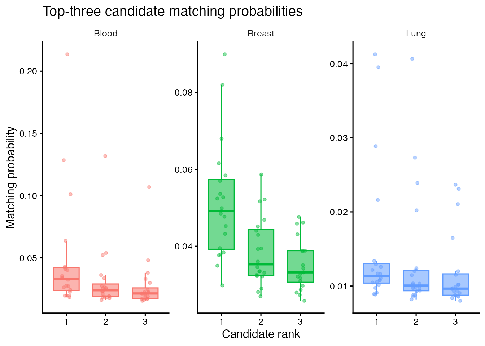
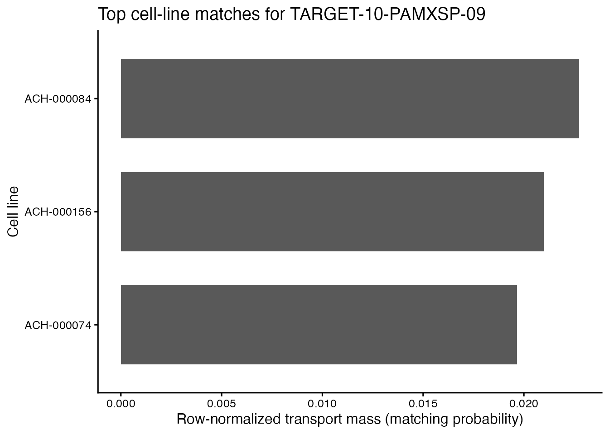
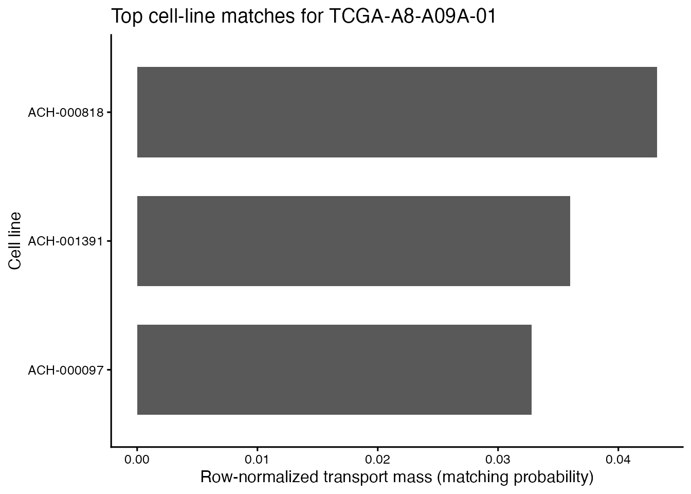
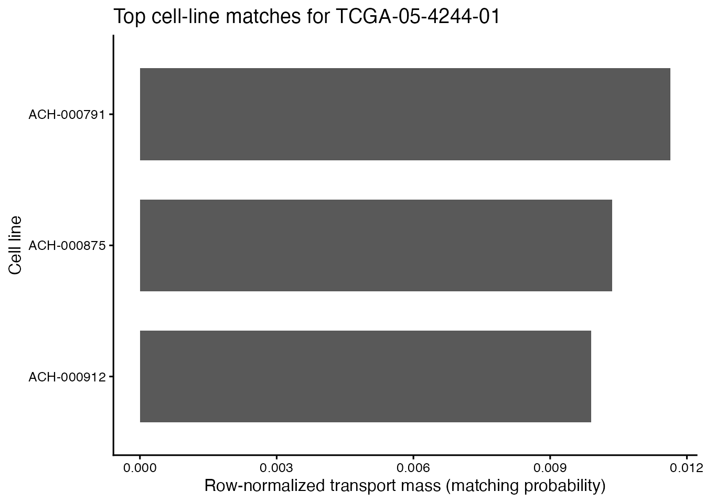

Tumor2Line: Tumor-Only Queries for CCLE Cell-Line Selection
Hua Zou
2026-11-17
Source:vignettes/Tumor2Line-tumor-only.Rmd
Tumor2Line-tumor-only.RmdIntroduction
This tutorial demonstrates how to use Tumor2Line when only a small tumor cohort is available and no matched cell-line expression cohort is provided by the user. The objective is to identify candidate CCLE cell lines for each tumor sample using population-aware transcriptomic matching.
When the query cohort is small, fitting a new PCA space using only the query tumors and candidate cell lines may produce a representation that is sensitive to the composition and size of the input cohort. Tumor2Line therefore supports projection into a large, prebuilt Celligner reference PCA space. The reference was constructed jointly from the Celligner tumor and cell-line populations and stores the molecular transformation and cell-line representations required for subsequent matching.
For illustration, this tutorial randomly selects 20 tumor samples from each of three Celligner lineages: blood, lung, and breast. The corresponding lineage-matched CCLE cell lines are used as candidate models. The selected tumors and candidate cell lines are represented in the same frozen Celligner reference PCA space, followed by lineage-specific unbalanced optimal transport (uOT) matching.
The tutorial covers the following workflow:
- Read the Celligner tumor expression matrix and phenotype annotations.
- Select 30 tumor samples from each of the three lineages.
- Identify the corresponding CCLE cell-line candidates.
- Load the prebuilt Celligner reference PCA object.
- Project the tumor queries into the reference space and run population-aware uOT matching.
- Retrieve and visualize the top three candidate cell lines for each tumor.
Important: The 90 demonstration tumors are sampled from the Celligner tumor dataset that was also used to construct the reference PCA space. This tutorial demonstrates the analysis workflow; it is not an independent evaluation of performance on previously unseen tumors.
Read the Celligner datasets
The tutorial uses the following Celligner files:
| File | Description | Expression scale |
|---|---|---|
Celligner_tumor_gene_expression.tsv |
Celligner tumor expression matrix | log2(TPM + 1) |
Celligner_cellline_gene_expression.tsv |
Celligner/CCLE cell-line expression matrix | log2(TPM + 1) |
Celligner_phenotype.tsv |
Sample annotations, including sampleID,
type, and lineage
|
Not applicable |
Celligner_reference_pca.rds |
Prebuilt reference PCA object | Not applicable |
The expression matrices and the reference PCA object are large files and may be distributed separately from the R package. Download the data files and the prebuilt reference PCA object from the Tumor2Line project Google Drive:Tumor2Line RefData.
Tumor2Line RefData/
├── Celligner_tumor_gene_expression.tsv
├── Celligner_cellline_gene_expression.tsv
├── Celligner_phenotype.tsv
├── Celligner_reference_pca.rds
├── PDMR_tumor_gene_expression.tsv
├── PDMR_cellline_gene_expression.tsv
└── PDMR_phenotype.tsvThe helper below searches both locations and returns the first existing file.
DATA_DIR <- "your/path/to/Tumor2Line_RefData"
required_files <- c(
"Celligner_tumor_gene_expression.tsv",
"Celligner_cellline_gene_expression.tsv",
"Celligner_phenotype.tsv"
)
missing_files <- required_files[
!file.exists(file.path(DATA_DIR, required_files))
]
if (length(missing_files) > 0) {
stop(
"The following files are missing from DATA_DIR: ",
paste(missing_files, collapse = ", "),
"\nPlease download the expression and phenotype files from the ",
"Tumor2Line data bundle and set DATA_DIR.",
call. = FALSE
)
}Read the Celligner tumor expression matrix and phenotype table. The cell-line expression matrix is required when rebuilding the reference PCA object, but it does not need to be loaded again for routine matching because the prebuilt reference object already contains the projected CCLE cell-line scores.
celligner_tumor <- data.table::fread(
file.path(DATA_DIR, "Celligner_tumor_gene_expression.tsv"),
data.table = FALSE,
check.names = FALSE,
colClasses = list(character = "sampleID")
)
celligner_cellline <- data.table::fread(
file.path(DATA_DIR, "Celligner_cellline_gene_expression.tsv"),
data.table = FALSE,
check.names = FALSE,
colClasses = list(character = "sampleID")
)
celligner_phenotype <- data.table::fread(
file.path(DATA_DIR, "Celligner_phenotype.tsv"),
data.table = FALSE,
check.names = FALSE,
colClasses = list(character = "sampleID")
)
dim(celligner_tumor)
#> [1] 12236 19189
dim(celligner_phenotype)
#> [1] 13485 22The Celligner expression matrices are already processed as log2(TPM +
1). Therefore, the query expression input must be specified as
query_input_scale = "processed" when it is projected into
the reference PCA space. Do not apply another log transformation.
Inspect the available sample types and lineage labels.
sort(unique(as.character(celligner_phenotype$type)))
#> [1] "CL" "tumor"
sort(unique(as.character(celligner_phenotype$lineage)))
#> [1] "adrenal" "adrenal_cortex"
#> [3] "bile_duct" "blood"
#> [5] "bone" "breast"
#> [7] "central_nervous_system" "cervix"
#> [9] "colorectal" "embryo"
#> [11] "endocrine" "engineered_breast"
#> [13] "engineered_central_nervous_system" "engineered_kidney"
#> [15] "engineered_lung" "engineered_ovary"
#> [17] "engineered_prostate" "esophagus"
#> [19] "eye" "fibroblast"
#> [21] "gastric" "germ_cell"
#> [23] "kidney" "liver"
#> [25] "lung" "lymphocyte"
#> [27] "nasopharynx" "nerve"
#> [29] "ovary" "pancreas"
#> [31] "peripheral_nervous_system" "pineal"
#> [33] "plasma_cell" "prostate"
#> [35] "skin" "soft_tissue"
#> [37] "teratoma" "thymus"
#> [39] "thyroid" "unknown"
#> [41] "upper_aerodigestive" "urinary_tract"
#> [43] "uterus"Select tumor-only query samples
For this demonstration, 20 tumor samples are randomly selected from
each of the blood, lung, and breast lineages. The exact lineage labels
must match the values in Celligner_phenotype.tsv.
The right-hand values in lineage_lookup are the lineage
labels used in the phenotype table. If the labels printed above differ
in capitalization or wording, update these values to the exact labels in
the file.
lineage_lookup <- c(
Blood = "blood",
Lung = "lung",
Breast = "breast"
)
available_lineages <- sort(unique(
trimws(as.character(celligner_phenotype$lineage))
))
resolve_lineage <- function(requested, available) {
matched <- which(tolower(trimws(available)) == tolower(trimws(requested)))
if (length(matched) != 1L) {
stop(
"Could not uniquely match lineage label '", requested,
"'. Check available_lineages and update lineage_lookup.",
call. = FALSE
)
}
available[[matched]]
}
selected_lineages <- vapply(
lineage_lookup,
resolve_lineage,
character(1),
available = available_lineages
)
selected_lineages
#> Blood Lung Breast
#> "blood" "lung" "breast"Retain tumor samples belonging to the selected lineages and verify that at least 20 samples are available for each lineage.
tumor_phenotype <- celligner_phenotype[
tolower(trimws(as.character(celligner_phenotype$type))) == "tumor" &
trimws(as.character(celligner_phenotype$lineage)) %in% unname(selected_lineages),
,
drop = FALSE
]
tumor_counts <- table(
factor(
tumor_phenotype$lineage,
levels = unname(selected_lineages)
)
)
knitr::kable(
data.frame(
Lineage_group = names(selected_lineages),
Celligner_lineage = unname(selected_lineages),
Available_tumors = as.integer(tumor_counts),
row.names = NULL
),
caption = "Available Celligner tumor samples in the selected lineages"
)| Lineage_group | Celligner_lineage | Available_tumors |
|---|---|---|
| Blood | blood | 1121 |
| Lung | lung | 1102 |
| Breast | breast | 1099 |
if (any(tumor_counts < 20L)) {
stop(
"At least one selected lineage contains fewer than 30 tumor samples. ",
"Choose another lineage or reduce the requested sample size.",
call. = FALSE
)
}Randomly sample 20 tumors per lineage. A fixed random seed makes the example reproducible.
set.seed(1234)
query_phenotype <- dplyr::bind_rows(
lapply(seq_along(selected_lineages), function(i) {
lineage_value <- selected_lineages[[i]]
lineage_samples <- tumor_phenotype[
tumor_phenotype$lineage == lineage_value,
,
drop = FALSE
]
selected_rows <- sample.int(
n = nrow(lineage_samples),
size = 20L,
replace = FALSE
)
lineage_samples[selected_rows, , drop = FALSE]
})
)
lineage_label_lookup <- stats::setNames(
names(selected_lineages),
unname(selected_lineages)
)
query_phenotype$lineage_group <- unname(
lineage_label_lookup[query_phenotype$lineage]
)
query_phenotype <- query_phenotype[
order(
match(query_phenotype$lineage, unname(selected_lineages)),
query_phenotype$sampleID
),
,
drop = FALSE
]
query_phenotype |>
dplyr::count(.data$lineage_group, .data$lineage, name = "n_tumors")
#> lineage_group lineage n_tumors
#> 1 Blood blood 20
#> 2 Breast breast 20
#> 3 Lung lung 20Extract the corresponding rows from the Celligner tumor expression matrix. The expression rows are reordered to match the phenotype table.
query_index <- match(
query_phenotype$sampleID,
celligner_tumor$sampleID
)
if (anyNA(query_index)) {
stop(
"Some selected tumor samples are missing from the Celligner tumor expression matrix.",
call. = FALSE
)
}
query_expr <- celligner_tumor[query_index, , drop = FALSE]
stopifnot(
identical(
as.character(query_expr$sampleID),
as.character(query_phenotype$sampleID)
)
)
dim(query_expr)
#> [1] 60 19189The resulting query cohort contains 90 tumor samples: 30 blood, 30 lung, and 30 breast tumors.
Identify lineage-matched CCLE cell lines
Candidate cell lines are selected from the Celligner phenotype table
using type == "CL" and the same three lineage labels. All
available CCLE cell lines in each selected lineage are retained.
cellline_phenotype <- celligner_phenotype[
toupper(trimws(as.character(celligner_phenotype$type))) == "CL" &
trimws(as.character(celligner_phenotype$lineage)) %in% unname(selected_lineages),
,
drop = FALSE
]
cellline_phenotype |>
dplyr::mutate(
lineage_group = unname(lineage_label_lookup[.data$lineage])
) |>
dplyr::count(.data$lineage_group, .data$lineage, name = "n_cell_lines") |>
knitr::kable(
caption = "Lineage-matched CCLE candidate cell lines"
)| lineage_group | lineage | n_cell_lines |
|---|---|---|
| Blood | blood | 93 |
| Breast | breast | 56 |
| Lung | lung | 206 |
The reference PCA object stores the scaled PCA scores and phenotype annotations for the Celligner cell-line population. Therefore, the full cell-line expression matrix does not need to be loaded or projected again in the matching step. The selected candidate cell lines are retrieved from the reference object by their lineage annotations.
Build and load the Celligner reference PCA space
Reference PCA construction
The reference PCA space is constructed once using the complete
Celligner tumor and cell-line populations. The Celligner expression
matrices are already processed as log2(TPM + 1), so
input_scale = "processed" is used.
The reference construction uses:
- The complete Celligner tumor and cell-line expression datasets.
- The 10,000 most variable genes, ranked by gene-wise standard deviation.
- Gene-wise centering and scaling.
- PCA with a cumulative variance threshold of 90%.
- PC-wise scaling to unit variance.
The following code is provided for reproducibility. It is not
executed during the routine tutorial because building the reference
requires reading and processing the full expression matrices. The
reference is generated once and saved as
Celligner_reference_pca.rds.
celligner_tumor_full <- data.table::fread(
resolve_input_file("Celligner_tumor_gene_expression.tsv"),
data.table = FALSE,
check.names = FALSE,
colClasses = list(character = "sampleID")
)
celligner_cellline_full <- data.table::fread(
resolve_input_file("Celligner_cellline_gene_expression.tsv"),
data.table = FALSE,
check.names = FALSE,
colClasses = list(character = "sampleID")
)
celligner_phenotype_full <- data.table::fread(
resolve_input_file("Celligner_phenotype.tsv"),
data.table = FALSE,
check.names = FALSE,
colClasses = list(character = "sampleID")
)
celligner_reference <- build_reference_pca(
tumor_expr = celligner_tumor_full,
cellline_expr = celligner_cellline_full,
phenotype = celligner_phenotype_full,
sample_id_col = "sampleID",
type_col = "type",
lineage_col = "lineage",
tumor_label = "tumor",
cellline_label = "CL",
input_scale = "processed",
n_variable_genes = 10000,
pca_variance_threshold = 0.90,
scale_genes = TRUE
)
saveRDS(
celligner_reference,
"Celligner_reference_pca.rds",
compress = "xz"
)Load the prebuilt reference PCA object
For routine analysis, load the previously generated reference object rather than rebuilding the PCA space.
reference_file <- file.path(
DATA_DIR,
"Celligner_reference_pca.rds"
)
celligner_reference <- readRDS(reference_file)
names(celligner_reference)
#> [1] "representation" "metadata" "cellline_scores"
#> [4] "cellline_metadata" "tumor_scores" "tumor_metadata"
#> [7] "parameters"
celligner_reference$parameters
#> $sample_id_col
#> [1] "sampleID"
#>
#> $type_col
#> [1] "type"
#>
#> $lineage_col
#> [1] "lineage"
#>
#> $tumor_label
#> [1] "tumor"
#>
#> $cellline_label
#> [1] "CL"
#>
#> $input_scale
#> [1] "processed"
#>
#> $n_variable_genes
#> [1] 10000
#>
#> $pca_variance_threshold
#> [1] 0.9
#>
#> $selected_pcs
#> [1] 826
#>
#> $common_gene_count
#> [1] 19188
#>
#> $n_reference_samples
#> [1] 13485
#>
#> $n_reference_tumors
#> [1] 12236
#>
#> $n_reference_celllines
#> [1] 1249Check that all selected candidate cell lines are represented in the reference object.
reference_cellline_ids <- rownames(
celligner_reference$cellline_scores
)
missing_reference_celllines <- setdiff(
cellline_phenotype$sampleID,
reference_cellline_ids
)
reference_lineages <- unique(
as.character(celligner_reference$cellline_metadata$lineage)
)
missing_reference_lineages <- setdiff(
unname(selected_lineages),
reference_lineages
)Run population-aware Tumor2Line matching
The selected tumor samples are projected into the frozen Celligner reference PCA space using the reference gene-scaling parameters, PCA loadings, and PC-scaling parameters. The reference cell-line scores are used directly as the candidate population.
Matching is performed independently within each lineage. The uOT cost is based on Euclidean distances in the scaled PCA representation, with the following parameters:
| Parameter | Value |
|---|---|
| Candidate scope | within_lineage |
| Distance | Euclidean |
Entropic regularization (epsilon) |
0.1 |
Query marginal relaxation (rho_query) |
1 |
Cell-line marginal relaxation (rho_cellline) |
1 |
| Maximum Sinkhorn iterations | 5,000 |
| Convergence tolerance | 1e-8 |
Because the Celligner expression values are already log2(TPM + 1),
the query input is specified as
query_input_scale = "processed".
tumor2line_result <- run_tumor2line_with_reference(
query_expr = query_expr,
reference = celligner_reference,
query_phenotype = query_phenotype,
cellline_expr = NULL,
query_sample_id_col = "sampleID",
query_lineage_col = "lineage",
query_input_scale = "processed",
candidate_scope = "within_lineage",
distance = "euclidean",
epsilon = 0.1,
rho_query = 1,
rho_cellline = 1,
max_iter = 5000,
tolerance = 1e-8,
evaluate = FALSE
)
tumor2line_result
#> Tumor2Line result
#> Queries: 60
#> Cell lines: 1249
#> Lineages: 34
#> Selected genes: 10000
#> Selected PCs: 826
#> PCA threshold: 0.9
#> Candidate scope: within_lineage
#> Ranking rows: 7100The matching output contains candidate cell lines for each query tumor. Because the query and candidate populations are matched within lineage, a tumor is ranked only against CCLE cell lines annotated with the same Celligner lineage.
Retrieve and visualize the top-ranked CCLE cell lines
Retrieve the top three candidates
The get_top_matches() function retrieves the top-ranked
candidate cell lines for every query. The output includes:
-
Query_ID: tumor query sample. -
CellLine_ID: candidate CCLE cell line. -
rank: query-specific candidate rank. -
transport_mass: raw uOT transport mass assigned to the query–cell-line pair. -
matching_probability: transport mass normalized across candidate cell lines for the same query. -
cost: molecular distance used by uOT.
Candidate ranks are ordered by decreasing
matching_probability, with molecular cost used to resolve
ties.
top3_matches <- get_top_matches(
tumor2line_result,
n = 3
)
top3_table <- top3_matches |>
dplyr::select(
.data$lineage,
.data$Query_ID,
.data$rank,
.data$CellLine_ID,
.data$transport_mass,
.data$matching_probability,
.data$cost,
.data$n_candidates
)
knitr::kable(
head(top3_table, 18),
digits = 4,
caption = "Example top-three CCLE cell-line candidates for tumor queries"
)| lineage | Query_ID | rank | CellLine_ID | transport_mass | matching_probability | cost | n_candidates |
|---|---|---|---|---|---|---|---|
| blood | TARGET-10-PAMXSP-09 | 1 | ACH-000084 | 0.0010 | 0.0227 | 1.0494 | 93 |
| blood | TARGET-10-PAMXSP-09 | 2 | ACH-000156 | 0.0010 | 0.0210 | 0.7429 | 93 |
| blood | TARGET-10-PAMXSP-09 | 3 | ACH-000074 | 0.0009 | 0.0197 | 0.7576 | 93 |
| blood | TARGET-10-PAPKNC-09 | 1 | ACH-000462 | 0.0027 | 0.0637 | 0.6607 | 93 |
| blood | TARGET-10-PAPKNC-09 | 2 | ACH-000059 | 0.0023 | 0.0540 | 0.7192 | 93 |
| blood | TARGET-10-PAPKNC-09 | 3 | ACH-000032 | 0.0016 | 0.0380 | 0.7951 | 93 |
| blood | TARGET-20-PANFMG-09 | 1 | ACH-000198 | 0.0015 | 0.0354 | 0.8810 | 93 |
| blood | TARGET-20-PANFMG-09 | 2 | ACH-000432 | 0.0010 | 0.0248 | 1.1158 | 93 |
| blood | TARGET-20-PANFMG-09 | 3 | ACH-000362 | 0.0009 | 0.0225 | 0.8099 | 93 |
| blood | TARGET-20-PANGCM-03 | 1 | ACH-000439 | 0.0011 | 0.0243 | 0.8339 | 93 |
| blood | TARGET-20-PANGCM-03 | 2 | ACH-000326 | 0.0008 | 0.0179 | 0.9812 | 93 |
| blood | TARGET-20-PANGCM-03 | 3 | ACH-000336 | 0.0008 | 0.0163 | 0.9109 | 93 |
| blood | TARGET-20-PANWHP-09 | 1 | ACH-000557 | 0.0010 | 0.0197 | 0.8930 | 93 |
| blood | TARGET-20-PANWHP-09 | 2 | ACH-000874 | 0.0009 | 0.0187 | 0.7035 | 93 |
| blood | TARGET-20-PANWHP-09 | 3 | ACH-000439 | 0.0008 | 0.0170 | 0.8213 | 93 |
| blood | TARGET-20-PANYNR-03 | 1 | ACH-000439 | 0.0021 | 0.0410 | 0.7146 | 93 |
| blood | TARGET-20-PANYNR-03 | 2 | ACH-000130 | 0.0009 | 0.0184 | 0.7487 | 93 |
| blood | TARGET-20-PANYNR-03 | 3 | ACH-000006 | 0.0009 | 0.0172 | 0.8060 | 93 |
The full result can optionally be exported as a tab-delimited file.
data.table::fwrite(
top3_table,
file = "Tumor2Line_tumor_only_top3_matches.tsv",
sep = "\t"
)Compare matching probabilities across lineages
The matching probability is the row-normalized transport mass
assigned to a candidate cell line. It sums to one across all candidate
cell lines for each query tumor. The raw transport_mass is
retained separately and represents the corresponding entry in the
unbalanced transport plan.
The following plot compares the matching probabilities of the top-three candidates across the three tumor lineages.
top3_plot_data <- top3_matches |>
dplyr::mutate(
lineage_group = unname(lineage_label_lookup[.data$lineage]),
rank = factor(.data$rank, levels = 1:3)
)
ggplot2::ggplot(
top3_plot_data,
ggplot2::aes(
x = .data$rank,
y = .data$matching_probability,
fill = .data$lineage_group,
color = .data$lineage_group
)
) +
ggplot2::geom_boxplot(
width = 0.65,
outlier.shape = NA,
alpha = 0.55
) +
ggplot2::geom_jitter(
width = 0.12,
alpha = 0.45,
size = 1.2
) +
ggplot2::facet_wrap(
~lineage_group,
scales = "free_y"
) +
ggplot2::labs(
x = "Candidate rank",
y = "Matching probability",
title = "Top-three candidate matching probabilities",
fill = "Tumor lineage",
color = "Tumor lineage"
) +
ggplot2::theme_classic(base_size = 12) +
ggplot2::theme(
legend.position = "none",
strip.background = ggplot2::element_blank()
)
Inspect individual tumor queries
The plot_top_matches() function provides a
candidate-level view for an individual tumor. The following code selects
one example query from each lineage and plots its top-three CCLE
cell-line candidates.
example_query_ids <- query_phenotype |>
dplyr::group_by(.data$lineage_group) |>
dplyr::slice_head(n = 1) |>
dplyr::ungroup() |>
dplyr::pull(.data$sampleID)
for (query_id in example_query_ids) {
print(
plot_top_matches(
tumor2line_result,
query_id = query_id,
n = 3
)
)
}


Summary
This tutorial demonstrates how Tumor2Line can identify candidate CCLE cell lines when only a small tumor cohort is available.
The workflow uses a large Celligner reference PCA space to avoid fitting a new PCA model from a small query cohort. Tumor samples are projected into the reference space using the stored molecular transformation, while the reference cell-line scores provide the candidate population. Tumor2Line then performs lineage-specific population-aware uOT matching and returns a ranked list of candidate cell lines for each tumor.
The key steps for applying this workflow to user-provided data are:
- Provide a tumor expression matrix with samples in rows and genes in columns.
- Provide a phenotype table containing sample IDs and harmonized cancer-lineage labels.
- Use the same gene identifiers and compatible expression scale as the
reference data. For log2(TPM + 1) input, specify
query_input_scale = "processed"; for untransformed TPM, specifyquery_input_scale = "raw". - Load the prebuilt Celligner reference PCA object.
- Run
run_tumor2line_with_reference()withcandidate_scope = "within_lineage".
Session information
sessionInfo()
#> R version 4.4.3 (2025-02-28)
#> Platform: aarch64-apple-darwin20
#> Running under: macOS Sequoia 15.6.1
#>
#> Matrix products: default
#> BLAS: /Library/Frameworks/R.framework/Versions/4.4-arm64/Resources/lib/libRblas.0.dylib
#> LAPACK: /Library/Frameworks/R.framework/Versions/4.4-arm64/Resources/lib/libRlapack.dylib; LAPACK version 3.12.0
#>
#> locale:
#> [1] en_US.UTF-8/en_US.UTF-8/en_US.UTF-8/C/en_US.UTF-8/en_US.UTF-8
#>
#> time zone: Asia/Shanghai
#> tzcode source: internal
#>
#> attached base packages:
#> [1] stats graphics grDevices utils datasets methods base
#>
#> other attached packages:
#> [1] knitr_1.50 ggplot2_4.0.0 dplyr_1.1.4 data.table_1.17.8
#> [5] Tumor2Line_0.1.3
#>
#> loaded via a namespace (and not attached):
#> [1] gtable_0.3.6 jsonlite_2.0.0 compiler_4.4.3 tidyselect_1.2.1
#> [5] dichromat_2.0-0.1 jquerylib_0.1.4 systemfonts_1.3.1 scales_1.4.0
#> [9] textshaping_1.0.4 yaml_2.3.10 fastmap_1.2.0 R6_2.6.1
#> [13] labeling_0.4.3 generics_0.1.4 htmlwidgets_1.6.4 tibble_3.3.0
#> [17] desc_1.4.3 bslib_0.9.0 pillar_1.11.1 RColorBrewer_1.1-3
#> [21] rlang_1.1.6 cachem_1.1.0 xfun_0.54 S7_0.2.0
#> [25] fs_1.6.6 sass_0.4.10 cli_3.6.5 withr_3.0.2
#> [29] pkgdown_2.1.3 magrittr_2.0.4 digest_0.6.37 grid_4.4.3
#> [33] rstudioapi_0.17.1 lifecycle_1.0.4 vctrs_0.6.5 evaluate_1.0.5
#> [37] glue_1.8.0 farver_2.1.2 ragg_1.5.0 rmarkdown_2.30
#> [41] tools_4.4.3 pkgconfig_2.0.3 htmltools_0.5.8.1